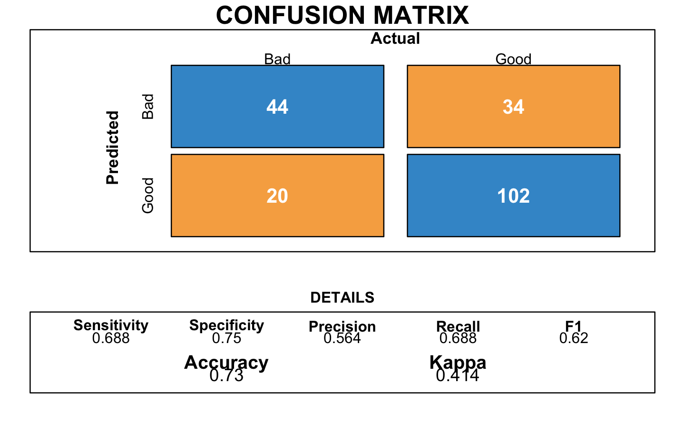

Chapter 3 Modelling
After cleaning and visualizing the data set, we move on to the creation of models.
3.1 Splitting strategies and balancing
In machine learning, a method to measure the accuracy of the models is to split the data into a training and a test set. The first subset is a portion of our data set that is fed into the machine learning model to discover and learn patterns. The other subset is to test our model. We split our data set as follows:
- Training set: 80% of the data
- Test set: the remaining 20% of the data
# Splitting
set.seed(346)
# Creation of the index
index.tr <- createDataPartition(y = GermanCredit$RESPONSE, p= 0.8, list = FALSE)
GermanCredit.tr <- GermanCredit[index.tr,] # Training set
GermanCredit.te <- GermanCredit[-index.tr,] # Testing setAs said in the exploratory data analysis, we notice that our data is heavily unbalanced.
| Outcome | Frequence |
|---|---|
| 0 | 236 |
| 1 | 564 |
Therefore, any model that favors the majority will reach an higher accuracy. However, in our case, we need to make sure to rightly classify any credit applications to avoid losses. To do so, we use a method called sub-sampling that balance the observations. It will allow us to have two equivalent samples.
# Balancing
n_no <- min(table(GermanCredit.tr$RESPONSE))
GermanCredit.tr.no <- filter(GermanCredit.tr, as_factor(RESPONSE)==0)
GermanCredit.tr.yes <- filter(GermanCredit.tr, as_factor(RESPONSE)==1)
## sub-sample 236 instances from the "Good"
index.no <- sample(size=n_no, x=1:nrow(GermanCredit.tr.no), replace=FALSE)
## Bind all the "Bad" and the sub-sampled "Good"
GermanCredit.tr.subs <- data.frame(rbind(GermanCredit.tr.no, GermanCredit.tr.yes[index.no,])) By doing so, we get the following sub sampled training set:
| Outcome | Frequence |
|---|---|
| 0 | 236 |
| 1 | 236 |
3.2 K-Nearest Neighbors (K-NN)
A K-Nearest Neighbors tries to predict the correct class for the test data by calculating the distances between the test data and all the training points. Then to predict, it selects a number K, of the closest point of the test set (thus the name K-nearest neighbors).
# K-Nearest Neighbors (K-NN)
trctrl <- trainControl(method = "cv", number=10) # Cross-validation
search_grid <- expand.grid(k = seq(1, 85, by = 1))
set.seed(346)
knn_cv <- train(as_factor(RESPONSE)~.,
data = GermanCredit.tr.subs,
method = "knn",
trControl = trctrl,
metric = "Accuracy",
tuneGrid = search_grid)We need to select the K number of points closest that give the optimal accuracy. In this case, it is 77
 We did several confusion matrix to measure the performance. The first one was with the K-NNk method. We found an accuracy of 0.615 which corresponds to well predicted clients (good and bad). The best accuracy value is 1 so 0.615 is considered as an average value.
We did several confusion matrix to measure the performance. The first one was with the K-NNk method. We found an accuracy of 0.615 which corresponds to well predicted clients (good and bad). The best accuracy value is 1 so 0.615 is considered as an average value.

3.3 Naive Bayes
Then, we used a probabilistic approach with Bayes classifiers. With this method, the confusion matrix provides a better accuracy of 0.72.
# Naive Bayes
trctrl <- trainControl(method = "cv", number=10)
search_grid <- expand.grid(
usekernel = c(TRUE, FALSE),
laplace = 0:5,
adjust = seq(0, 5, by = 1)
)
set.seed(346)
naive_bayes <- train(as_factor(RESPONSE) ~.,
data = GermanCredit.tr.subs,
method = "naive_bayes",
trControl=trctrl,
tuneGrid = search_grid)
3.4 Logistic Regression
A logistic regression is a regression adapted to binary classification.
We use a cross-validation method to train our model and choose the Akaïke Information Criterion (AIC) to select the variables. The AIC is used to select the model based on the number of parameters. We choose the model with the smallest AIC.
# Logistic Regression
trctrl <- trainControl(method = "cv", number=10)
set.seed(346)
glm_aic <- train(as_factor(RESPONSE) ~.,
data = GermanCredit.tr.subs,
method = "glmStepAIC",
family="binomial",
trControl=trctrl,
trace=0)The following plot corresponds to the resulting confusion matrix of the logistic regression:

It provides an accuracy of 0.73.
3.5 Linear Discriminant Analysis
# Linear Discriminant Analysis
trctrl <- trainControl(method = "cv", number=10)
set.seed(346)
lda.model <- train(as_factor(RESPONSE) ~.,
data = GermanCredit.tr.subs,
method = "lda",
trControl = trctrl)
3.6 Trees
The trees represent a hierarchical set of binary rules in a shape of a tree.
# Trees
trctrl <- trainControl(method = "cv", number=10)
search_grid <- expand.grid(cp = seq(from = 0.1, to = 0, by = -0.01))
set.seed(346)
tree_model <- train(as_factor(RESPONSE) ~.,
data = GermanCredit.tr.subs,
method = "rpart",
trControl=trctrl,
tuneGrid = search_grid)

3.7 Neural Network
Neural Network is a method based on combining several predictions of small nodes.
# Neural Network (NN)
trctrl <- trainControl(method = "cv", number=5)
search_grid <- expand.grid(size = 1:10,
decay = seq(0, 0.5, 0.1))
set.seed(346)
neural_network <- train(as_factor(RESPONSE) ~.,
data = GermanCredit.tr.subs,
method = "nnet",
trControl=trctrl,
tuneGrid = search_grid)
The confusion matrix with neural network presents a good accuracy of 0.705.
3.8 Support Vector Machines
# Support Vector Machines
trctrl <- trainControl(method = "cv", number=5)
search_grid <- expand.grid(C = c(0.01, 0.1, 1, 10, 100, 1000))
set.seed(346)
svm <- train(as_factor(RESPONSE) ~.,
data = GermanCredit.tr.subs,
method = "svmLinear",
trControl=trctrl,
tuneGrid = search_grid) The cinfusion matrix presents an accuracy of 0.745.
3.9 Random Forest
# Random Forest
trctrl <- trainControl(method = "cv", number=5)
search_grid <- expand.grid(.mtry = c(1:15))
set.seed(346)
rf <- train(as_factor(RESPONSE) ~.,
data = GermanCredit.tr.subs,
method = "rf",
trControl = trctrl,
tuneGrid = search_grid
)Again, this models shares an accuracy of 0.73.
3.10 Summary
To evaluate our models, there are many metrics that can be used. We decided to choose first the accuracy and then have a look at the sensitivity and the specificity. In other words, we want to have a model with a good accuracy and the best sensitivity and specificity.
| Accuracy | Sensitivity | Specificity | |
|---|---|---|---|
| Support Vector Machines | 0.74 | 0.75 | 0.74 |
| Tree | 0.74 | 0.66 | 0.65 |
| Logistic Regression | 0.73 | 0.72 | 0.74 |
| Random Forest | 0.73 | 0.69 | 0.75 |
| Linear Discriminant Analysis | 0.72 | 0.75 | 0.71 |
| Naive Bayes | 0.72 | 0.81 | 0.68 |
| Neural Network | 0.70 | 0.75 | 0.68 |
| K-nearest neighbors | 0.62 | 0.47 | 0.68 |
By looking at this summary table of the models, we can see that the Logistic Regression and the Random Forest are our top models. Even if the Random Forest is slightly worse than the following models in terms of specificity and sensitivity. Therefore, we chose the two models:
- Logistic Regression
- Random Forest
3.11 Variable Importance
The following plot shows a selection of the most important variables of our data frame. The two main disadvantages of these methods are: The increasing over fitting risk when the number of observations is insufficient. The significant computation time when the number of variables is large.
The result below displays that we seem to have 6 relevant variables: checking account, the duration of the credit asked, the history of previous credits, the savings, the amount of money owned by the applicant and the real estate owned.
After this first global analysis, we wanted to evaluate if there is room for improvement for the models selected in Machine Learning, in other words, if we can remove some variables to make the analysis easier without loosing the performance.
3.11.1 Logistic Regression

| Accuracy | Sensitivity | Specificity | |
|---|---|---|---|
| Original Logistic Regression | 0.73 | 0.72 | 0.74 |
| Refit Logistic Regression | 0.66 | 0.61 | 0.68 |
As we can see in the table above, we lose performance in terms of the metrics. This means that the variable importance is not that important for the logistic regression. A good point is that we need to remind ourselves that the logistic regression already does a variable importance with the AIC criterion.